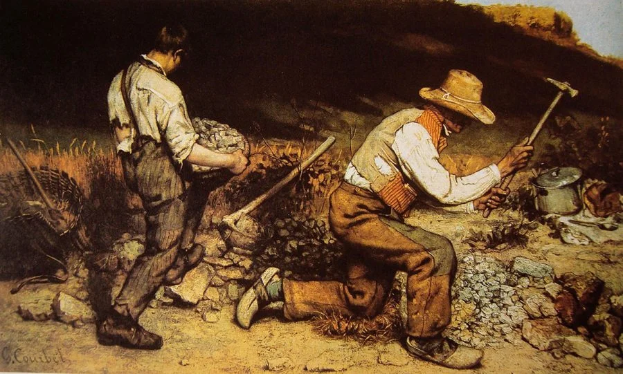

Esses três estilos de arte que estou citando são bem famosos e os mais comuns, pricipalmente o Realismo, mas afinal, qual é a diferença entre eles? além de seus estilos quase distintos e terem muito oque em comum apesar de um lado, eu irei te mostrar a definição de cada estilo e descrição.
O realismo foi um movimento artístico e literário surgido nas últimas décadas do século XIX na Europa, mais especificamente em França, em reação ao romantismo. Foi um movimento que bombou muito mais em 1850 e 1900 como um movimento cutural, ficou muito famoso na França e em outros continentes. A origem deste estilo de arte veio da Europa como dito a cima, mas o ponto que os artistas da época queriam registrar o mais próximo da realidade, por exemplo como Gustave Courbet um artista que fez muitos quadros nesse movimento, um dos mais famosos dele é os "The Stone Breakers" traduzido do inglês ficaria " Os Quebradores de Pedras" é uma obra famosa sobre os mineradores da época, um exemplo abaixo:
Veja que eles sempre tentam buscar o máximo proximo da realidade que for menos desatento parece uma foto fotográfica.